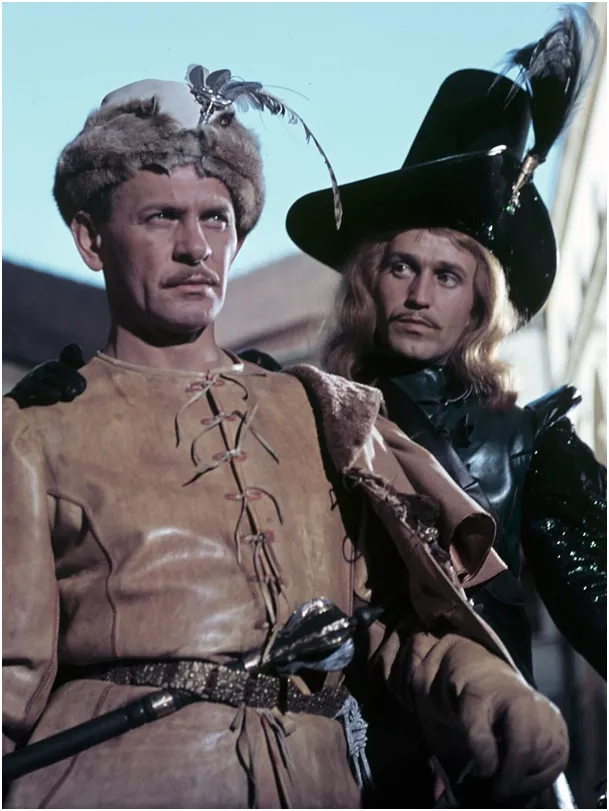
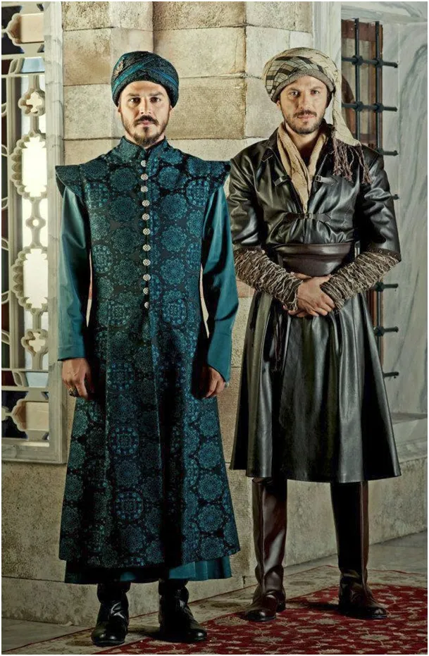

Europa krwawi na wschodzie i uśmiecha się na południe.
„Uważam, że musimy wezwać do zacieśnienia współpracy między UE a Turcją, unikać konfrontacji. W tym celu musimy nawiązać kontakt z Turcją, biorąc pod uwagę kwestię Cypru” – powiedział Josep Borrell na wspólnej konferencji prasowej z ministrem spraw zagranicznych Belgii po nieformalnym spotkaniu w Brukseli.

Josep Borrell widzi w antyamerykańskiej Turcji przeciwwagę dla Unii w stosunkach z USA. Unia a szczególnie Niemcy toną naciskani przez USA we wspieraniu Ukrainy. Ostatnie ruchy USA to zmniejszenie pomocy i deklaracja długiej współpracy, czyli walka do ostatniego Ukraińca.

Krym był przez wieki tatarski i był de facto lennem Turcji. W swej deklaracji przychylności Turcji Borrell podkreśli kwestie Cypryjskie, co jest novum, bo jak dotąd nikt, poza Turcją, nie uznał państwa Turecka Republika Cypru Północnego. Anglicy też tam chętnie kolaborują z Turkami, bo nie mają szans, aby z Cypru Turków wypchnąć, a mają tam swoje nuklearne bazy strzegące Kanału Sueskiego.
Krym jest tatarski! Ten naród podbity przez Rosję został wysiedlony w głąb Syberii, wielu potomków Tatarów wróciło po pierestrojce. Myślę , że gdy zachód i wschód się wykrwawią południe, czyli Turcy, jako rozjemca chętnie wydzierżawią portowe nabrzeża na północnym brzegu Morza Czarnego.
Gdzie się kończy Azja a zaczyna Europa to kwestia granic kulturowych, bo fizycznie to jeden kontynent. Nieunikniona zapaść demograficzna Rosji to rozwój Islamu od Moskwy na zachód. Ostatnia dekada to wiele nowych, wielkich meczetów w Rosji otwieranych z pompą w towarzystwie prezydenta Turcji, dla symetrii Rosja buduje w Turcji elektrownie atomowe.
Podczas obrony Kamieńca Podolskiego (1672), tylko jeden z rycerzy miał "europejski strój", był nim Szkot Ketling. Pan Wołodyjowski stroił się w kontusze niby bohaterowie "Wspaniałego Stulecia", tureckiej epopei tamtych czasów.

Przy tej okazji polecam mój tekst o naszych azjatyckich fortunach pozostawionych w 1918 nad morzem Kaspijskim na rzecz "zachodnich bankierów. "Dlaczego polski sejm to mongolska jurta?" https://pawelklimczewski.pl/2021/08/05/dlaczego-polski-sejm-to-mongolska-jurta/
Paweł Klimczewski